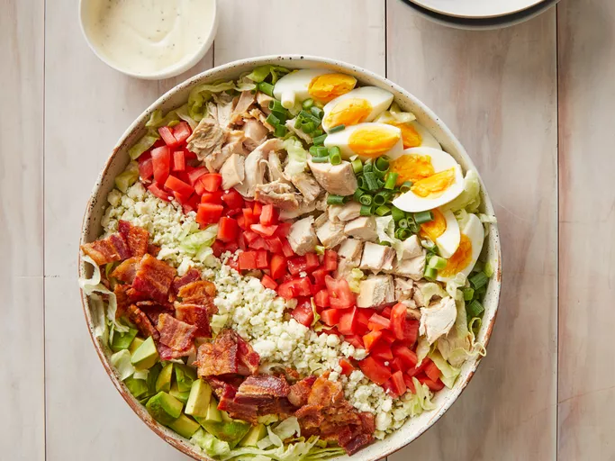
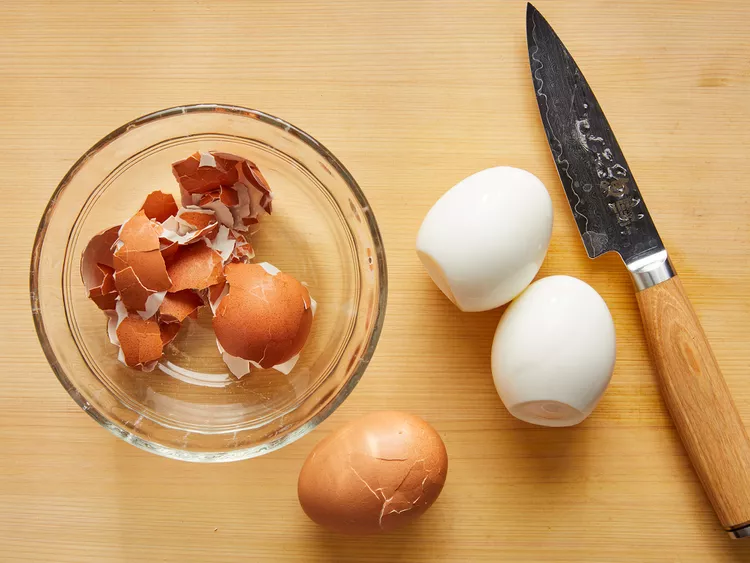
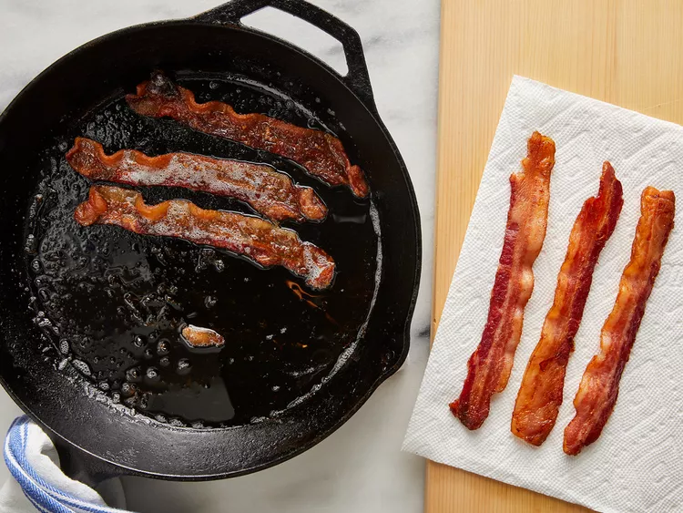
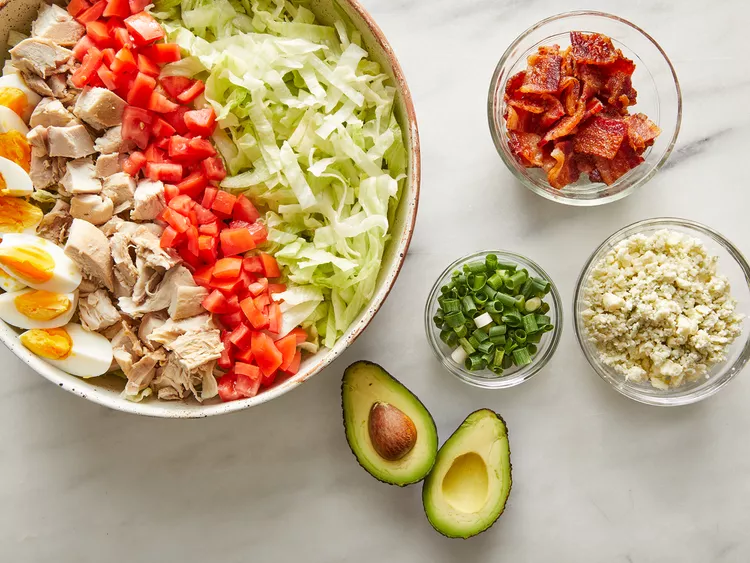
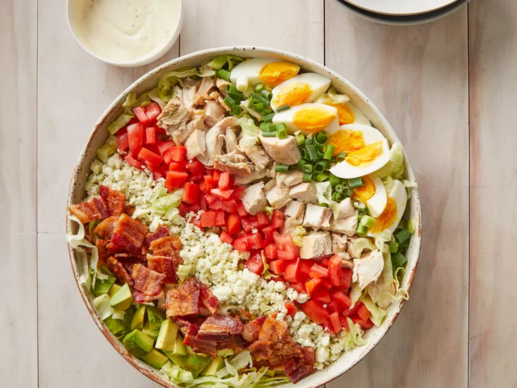

Cobb Salad Recipe

Description
A Cobb salad is an American dish that consists of lettuce topped with bacon, chicken, boiled eggs, tomatoes, and other ingredients arranged in neat rows. It is traditionally served as a main course. The origins of the classic salad is unclear, but many believe it was created in the late 1930s at the Brown Derby restaurant in Hollywood.
Ingredients
- 6 slices bacon
- 3 large eggs
- 1 head iceberg lettuce, shredded
- 3 cups chopped, cooked chicken meat
- 2 ripe tomatoes, seeded and chopped
- ¾ cup blue cheese, crumbled
- 3 green onions, chopped
- 1 avocado - peeled, pitted and diced
- 1 (8 ounce) bottle Ranch-style salad dressing
Instructions
- Place eggs in a saucepan and cover completely with cold water; bring to a boil, then cover and remove from heat. Let eggs sit for 10 to 12 minutes, then cool, peel and chop.

- While the eggs are cooking, place bacon in a large, deep skillet. Cook over medium-high heat until evenly brown, 7 to 10 minutes. Drain, crumble, and set aside.

- Divide shredded lettuce among individual plates. Arrange rows of bacon, eggs, chicken, tomatoes, blue cheese, green onions, and avocado on top.

- Drizzle with dressing and enjoy!
s